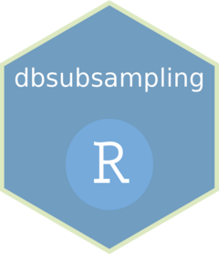

Function reference
-
ComputeLoss() - Compute loss function for OSS
-
DDS() - Data-Driven Subsampling Based on Uniform Design
-
IBOSS() - Information-Based Optimal Subdata Selection for Big Data Linear Regression (IBOSS,
Rcpp-c++-style byWang)
-
IES() - Independence-Encouraging Subsampling for Nonparametric Additive Models (IES, Proposed by Zhang et.al. (2024))
-
L2norm() - Get L2 norm
-
Leverage() - Subsampling Based on Leverage Scores
-
LowCon() - LowCon: A Design-based Subsampling Approach in a Misspecified Linear Model
-
OSMAC() - Optimal Subsampling for Large Sample Logistic Regression(OSMAC)
-
OSS() - Orthogonal subsampling for big data linear regression (OSS,
Rcpp-version bythe package itself)
-
Unif() - Uniform sampling.
-
armaComputeLoss() - Compute loss function for OSS (RcppArmadillo-version)
-
armaIES() - IES Core Code Using
RcppArmadillo.
-
armaIES_compare() - IES C++-Version for Benchmarking (C++ Core Code)
-
armaOSS() - OSS
RcppArmadillo-version byZhu(myArma_OSScore code)
-
armaScaleMatrix() - Scale a matrix (RcppArmadillo-version)
-
armabottom_k() - Find t smallest index of a vector (RcppArmadillo-version)
-
armarcppIBOSS() - IBOSS with
RcppArmadillobythe package itself(myArma_IBOSScore c++ code)
-
bottom_t_index() - Find t smallest index of a vector
-
c_IES_compare() - IES C++-Version for Benchmarking (R-Wrap Code)
-
data_IES_Case_1_Train - Simulation datasets of IES Case1
-
data_IES_Case_2_Train - Simulation datasets of IES Case2
-
data_binary_class - An artificial data set for logistic regression
-
data_numeric_regression - An artificial data set for linear regression.
-
getIdxR_cpp() - Get subsample index of other column(except the first column) (IBOSS core code,
Rcpp-C++-style byWang)
-
getIdx_cpp() - Get subsample index of the first column (IBOSS core code,
Rcpp-C++-style byWang)
-
get_Logistic_MLE() - MLE for Logistic regression
-
myArma_IBOSS() - IBOSS with
RcppArmadillo-r-style bythe package itself.
-
myArma_OSS() - OSS (
RcppArmadillo-version byZhu)
-
myR_IBOSS() - IBOSS with
base Rbythe package itself.
-
myR_OSS() - OSS with
base Rbythe package itself.
-
myRcpp_IBOSS() - IBOSS with
Rcpp-r-style bythe package itself.
-
myRcpp_cstyle_IBOSS() - IBOSS with
Rcpp-C++-stylebythe package itself.
-
rComputeLoss() - Compute loss function for OSS (r-version)
-
rL2norm() - Get L2 norm (r-version)
-
r_IES() - R Version of IES for Testing
-
r_IES_compare() - IES R-Version for Benchmarking
-
rbottom_t_index() - Find t smallest index of a vector.
-
rcppIBOSS() - IBOSS with
Rcpp-r-style bythe package itself(myRcppIBOSScore c++ code)
-
rcppOSS() - OSS
Rcpp-version bythe package itself(OSScore code)
-
rcpp_cstyle_IBOSS() - IBOSS with
Rcpp-C++-style bythe package itself(myRcpp_cstyle_IBOSScore c++ code)
-
scale01() - Scale data to \([0, 1]^p\)
-
scale_neg_pos_1() - Transform data to \([-1,1]^p\)
-
subsampling() - Get subsample index.